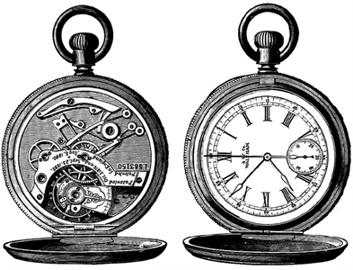

LE TEMPS
(par l'ennui)
"Dans chaque vieux, il y a un jeune qui se demande ce qui s'est passé." Groucho MARX

D'une évolution normale, un enfant quitte l'école primaire pour aller au collège, alors les récréations vont affirmer des positions comportementales différentes. II doit être fait le deuil des jeux de billes, de cette dextérité qu'ont les fillettes à l'élastique ou encore de la marelle ou de la balle au prisonnier. Ce changement socio comportemental et identitaire se réalise naturellement en l'espace d'un été de transition entre ces deux périodes sociales. Vous vous rappelez la dernière fois ou vous avez jouez à 1, 2, 3 soleil ? Pourquoi adulte on ne joue plus comme un enfant ?
Dans cette continuité, le jeune adulte doit abandonner sa vie festive estudiantine quand il se met en ménage car porté par la réalisation de ses valeurs naissantes et qui impliquent le début de responsabilités et l'éloignement de l'insouciance. Encore, l'adulte mâture, enfant de ses parents, qui devient un autre adulte à leur disparition. Autour de ce double deuil, enterre t'il ses parents ou l'enfant qu'il était ?
Le temps est un axe de travail premier en hypnose. Lorsque nous sommes bloqués dans une nébuleuse existentielle, sommes nous dans la bonne temporalité ? Est ce que le conscient et l'inconscient mesurent le temps avec la même manière ? J'aurais tendance à affirmer que non, au vu de certains symptômes comme le syndrome de Stress Post Traumatique et ses reviviscences ou encore les phobies, les toxicomanies, l'anxiété ou la dépression qui pathologisent le temps.
Le temps dans sa dimension subjective se distord, recule ou s'allonge. Alors que le conscient objective le temps en mesure mécanique et scientifique, le mesurant avec régularité et précision au travers les calendriers, les horloges ou les rythmes circadiens, la conscience subjective - l'inconscient - a cette notion de temps aléatoire et discontinue, affirmée par les oublis, les manques et les dénis. Cette particularité subjective et inconsciente du temps est propre à chaque individu, exemple en est que ne pouvons pas quantifier la durée d'un rêve.
Puis il y a d'autres ingrédients qui influencent la définition du temps comme l'espace ou la vitesse (résultante de l'espace par le temps) qui, au delà de la mesure objective, ont une perception singulière. D'ailleurs, l'estimation des durées varie avec l'âge, la patience s'acquière avec l'expérience, n'est ce pas ? Un enfant compte son âge en demi an, l'adulte plus, et on retrouve chez certains séniors le compte en demi an de l'enfant. On peut aussi questionner les notions d'impulsivité ou de frustration qui pourraient se voir comme une mesure erronée du temps.
Il reste à se demander toutefois si le temps constitue seulement un cadre externe ou, bien plutôt, une structure interne. Que savons-nous, que pouvons-nous savoir au juste du temps ? Le philosophe Maurice MERLEAU-PONTY a pu dire du temps "qu’il n’est pas un objet de notre savoir, mais une dimension de notre être". Rien n’interdit toutefois de prendre en vue une dimension de notre être comme objet possible ou éventuel de notre savoir. Notre présence dans l'espace donc à la réalité du moment nous connecte au temps dans sa perception. La notion de connexion signifie être pleinement conscient de son expérience du moment. Si nous sommes qu'à moitié présent, nous manquons quelque chose du temps qui passe. Il y a donc un double temps, celui de l'arrêt pendant que la continuité coule. Pour citer Léon TOLSTOÏ, "il n'a qu'un moment important, c'est maintenant." C'est le seul moment ou nous détenons un pouvoir, une maitrise et cela donne du sens à notre existence.
L'agir, le pouvoir d'agir n'existe que dans le présent. Le temps passé est déjà révolu et consommé et le temps avenir n'existe pas encore, il est en projet ! Pourtant nous laissons le passé être un influenceur conséquent du présent, présent dans lequel nous appréhendons le futur, parfois au travers du sentiment d'ennui.
Serge GAINSBOURG décrivait l'ennui comme une position aristocratique! Rien n’interdit toutefois de prendre en vue une dimension de notre être comme objet possible ou éventuel de notre savoir. C’est à cette tâche que s’est attelé Martin HEIDEGGER, auteur, en 1927, d’un traité précisément intitulé "Être et temps". Il ne se contente pas de reprendre la formulation classique de la question "qu’est-ce que le temps ?", il en a risqué une formulation autrement audacieuse en demandant : "Qui est le temps ?". Et il apporte à cette question pour le moins déroutante et inattendue une réponse non moins inattendue et déroutante : "Nous sommes temps". Le temps est notre étoffe, nous sommes d’étoffe temporelle, et la trame de cette étoffe est constituée par ce qu’on appelle le fil du temps. Et c’est au fil du temps que l’être humain s’achemine de la naissance à la mort – ce qui fait que les Anciens ne disaient pas en général "les hommes" mais "les mortels".
Dans cette continuité, le jeune adulte doit abandonner sa vie festive estudiantine quand il se met en ménage car porté par la réalisation de ses valeurs naissantes et qui impliquent le début de responsabilités et l'éloignement de l'insouciance. Encore, l'adulte mâture, enfant de ses parents, qui devient un autre adulte à leur disparition. Autour de ce double deuil, enterre t'il ses parents ou l'enfant qu'il était ?
Le temps est un axe de travail premier en hypnose. Lorsque nous sommes bloqués dans une nébuleuse existentielle, sommes nous dans la bonne temporalité ? Est ce que le conscient et l'inconscient mesurent le temps avec la même manière ? J'aurais tendance à affirmer que non, au vu de certains symptômes comme le syndrome de Stress Post Traumatique et ses reviviscences ou encore les phobies, les toxicomanies, l'anxiété ou la dépression qui pathologisent le temps.
Le temps dans sa dimension subjective se distord, recule ou s'allonge. Alors que le conscient objective le temps en mesure mécanique et scientifique, le mesurant avec régularité et précision au travers les calendriers, les horloges ou les rythmes circadiens, la conscience subjective - l'inconscient - a cette notion de temps aléatoire et discontinue, affirmée par les oublis, les manques et les dénis. Cette particularité subjective et inconsciente du temps est propre à chaque individu, exemple en est que ne pouvons pas quantifier la durée d'un rêve.
Puis il y a d'autres ingrédients qui influencent la définition du temps comme l'espace ou la vitesse (résultante de l'espace par le temps) qui, au delà de la mesure objective, ont une perception singulière. D'ailleurs, l'estimation des durées varie avec l'âge, la patience s'acquière avec l'expérience, n'est ce pas ? Un enfant compte son âge en demi an, l'adulte plus, et on retrouve chez certains séniors le compte en demi an de l'enfant. On peut aussi questionner les notions d'impulsivité ou de frustration qui pourraient se voir comme une mesure erronée du temps.
Il reste à se demander toutefois si le temps constitue seulement un cadre externe ou, bien plutôt, une structure interne. Que savons-nous, que pouvons-nous savoir au juste du temps ? Le philosophe Maurice MERLEAU-PONTY a pu dire du temps "qu’il n’est pas un objet de notre savoir, mais une dimension de notre être". Rien n’interdit toutefois de prendre en vue une dimension de notre être comme objet possible ou éventuel de notre savoir. Notre présence dans l'espace donc à la réalité du moment nous connecte au temps dans sa perception. La notion de connexion signifie être pleinement conscient de son expérience du moment. Si nous sommes qu'à moitié présent, nous manquons quelque chose du temps qui passe. Il y a donc un double temps, celui de l'arrêt pendant que la continuité coule. Pour citer Léon TOLSTOÏ, "il n'a qu'un moment important, c'est maintenant." C'est le seul moment ou nous détenons un pouvoir, une maitrise et cela donne du sens à notre existence.
L'agir, le pouvoir d'agir n'existe que dans le présent. Le temps passé est déjà révolu et consommé et le temps avenir n'existe pas encore, il est en projet ! Pourtant nous laissons le passé être un influenceur conséquent du présent, présent dans lequel nous appréhendons le futur, parfois au travers du sentiment d'ennui.
Serge GAINSBOURG décrivait l'ennui comme une position aristocratique! Rien n’interdit toutefois de prendre en vue une dimension de notre être comme objet possible ou éventuel de notre savoir. C’est à cette tâche que s’est attelé Martin HEIDEGGER, auteur, en 1927, d’un traité précisément intitulé "Être et temps". Il ne se contente pas de reprendre la formulation classique de la question "qu’est-ce que le temps ?", il en a risqué une formulation autrement audacieuse en demandant : "Qui est le temps ?". Et il apporte à cette question pour le moins déroutante et inattendue une réponse non moins inattendue et déroutante : "Nous sommes temps". Le temps est notre étoffe, nous sommes d’étoffe temporelle, et la trame de cette étoffe est constituée par ce qu’on appelle le fil du temps. Et c’est au fil du temps que l’être humain s’achemine de la naissance à la mort – ce qui fait que les Anciens ne disaient pas en général "les hommes" mais "les mortels".
Se confronter au temps, c’est donc se risquer à la confrontation la plus difficile qui soit : la confrontation avec soi-même. D’où le caractère exemplaire de l’expérience de l’ennui et sa valeur initiatique. Peut-être avons-nous désappris à nous ennuyer, à mesure que nous avons appris à nous désennuyer, d’où le vide abyssal que comble aujourd’hui cette addiction répandue qui s’appelle la technologie.
Étymologiquement, l’ennui est un mot très fort, il vient du latin inodium qui signifie "en haine". Il a gardé ce sens en français classique, où il rime avec : noirceur, tristesse, chagrin, dépit, désespoir. On trouve en outre sous la plume de PASCAL, l’expression très parlante : "se sécher d’ennui". On dit plutôt aujourd’hui : "mourir d’ennui", éprouver un "ennui mortel" (même si aucune notice nécrologique n’a sans doute fait figurer, après notification du nom du disparu : Mort d’ennui). L’ennui mortel incite à "tuer le temps". On voit là à quel point les hommes sont tenus, dans leurs faits et gestes et leur emploi du temps, par la relation qu’ils entretiennent avec le temps.
S’ennuyer, c’est en effet par définition trouver le temps long, L’ennui, quoi qu’il en soit de son essence ultime, montre presque de manière palpable, une relation au temps, une façon de nous tenir à l’égard du temps, un sentiment du temps. C'est "trouver le temps long", le temps qui tarde à passer, qui s’étire à n’en plus finir, comme la nuit pour l’insomniaque. L’ennui mortel s’apparente dès lors à l’angoisse, à la mort et au néant.
Il est vrai qu’il n’est pas facile d’avouer que l’on s’ennuie et certains prétendent même ne jamais s’ennuyer. S’ennuyer, cela passe pour n’être pas très glorieux. Il reste donc à se demander s’il convient de "tuer le temps", ou bien de ''laisser le temps au temps", c’est-à-dire au fond à nous-mêmes. On peut chercher à fuir l’ennui, à le chasser comme un importun, ou au contraire à l’approfondir.
Alors, qu’est-ce que l’ennui a à nous dire et à quoi nous faisons la sourde oreille en voulant le chasser à tout prix ? Ce qui semble ici inaudible et insupportable, serait-ce que je m’apparais alors moi-même à moi-même comme profondément ennuyeux, non pas quand quelque chose de bien précis m’ennuie, mais lorsque je m’ennuie ? Et si l’ennui était le révélateur de notre appartenance au temps, et par là de notre condition ?
Qu’adviendrait-il au juste, quelles découvertes serions-nous amenés à faire si nous acceptions d’aller jusqu’au bout de l’ennui, comme un voyage au bout de la nuit ? L’ennui éprouvé jusqu’au bout, jusqu’à l’ennui profond, "l'ennui mortel" aurait-il une valeur, sinon rédemptrice, du moins curative ou thérapeutique ? Car si l’ennui est un fardeau, c’est aussi un privilège : celui de perdre son temps, c’est-à-dire au fond de pouvoir prendre son temps. Un escargot ne prend pas son temps, ni une tortue, ils vont simplement moins vite que le lièvre. L’animal n’est pas temporel, mais seulement temporaire, il vit dans le temps, non avec le temps.
Positivement l’ennui est l’une des formes que peut revêtir ce loisir intérieur que nous appelons aujourd’hui le "temps libre". Il en ressort en outre que la conception courante du temps, qui fait du temps un écoulement de "maintenants" ponctuels, fractions minimales de temps, ne permet pas de pénétrer dans la structure temporelle de l’ennui et ne permet pas non plus, a fortiori, d’aborder le temps comme dimension constitutive de notre être.
Il reste donc à envisager éprouver le temps autrement que comme du quantifiable et du mesurable, de manière chrono-métrique, en laissant le déjà et le pas encore se rejoindre et se répondre tout autrement que ne le dit l’adverbe successivement ou comme Jacques BREL chantait dans une de ces chansons, conséquement.
Étymologiquement, l’ennui est un mot très fort, il vient du latin inodium qui signifie "en haine". Il a gardé ce sens en français classique, où il rime avec : noirceur, tristesse, chagrin, dépit, désespoir. On trouve en outre sous la plume de PASCAL, l’expression très parlante : "se sécher d’ennui". On dit plutôt aujourd’hui : "mourir d’ennui", éprouver un "ennui mortel" (même si aucune notice nécrologique n’a sans doute fait figurer, après notification du nom du disparu : Mort d’ennui). L’ennui mortel incite à "tuer le temps". On voit là à quel point les hommes sont tenus, dans leurs faits et gestes et leur emploi du temps, par la relation qu’ils entretiennent avec le temps.
S’ennuyer, c’est en effet par définition trouver le temps long, L’ennui, quoi qu’il en soit de son essence ultime, montre presque de manière palpable, une relation au temps, une façon de nous tenir à l’égard du temps, un sentiment du temps. C'est "trouver le temps long", le temps qui tarde à passer, qui s’étire à n’en plus finir, comme la nuit pour l’insomniaque. L’ennui mortel s’apparente dès lors à l’angoisse, à la mort et au néant.
Il est vrai qu’il n’est pas facile d’avouer que l’on s’ennuie et certains prétendent même ne jamais s’ennuyer. S’ennuyer, cela passe pour n’être pas très glorieux. Il reste donc à se demander s’il convient de "tuer le temps", ou bien de ''laisser le temps au temps", c’est-à-dire au fond à nous-mêmes. On peut chercher à fuir l’ennui, à le chasser comme un importun, ou au contraire à l’approfondir.
Alors, qu’est-ce que l’ennui a à nous dire et à quoi nous faisons la sourde oreille en voulant le chasser à tout prix ? Ce qui semble ici inaudible et insupportable, serait-ce que je m’apparais alors moi-même à moi-même comme profondément ennuyeux, non pas quand quelque chose de bien précis m’ennuie, mais lorsque je m’ennuie ? Et si l’ennui était le révélateur de notre appartenance au temps, et par là de notre condition ?
Qu’adviendrait-il au juste, quelles découvertes serions-nous amenés à faire si nous acceptions d’aller jusqu’au bout de l’ennui, comme un voyage au bout de la nuit ? L’ennui éprouvé jusqu’au bout, jusqu’à l’ennui profond, "l'ennui mortel" aurait-il une valeur, sinon rédemptrice, du moins curative ou thérapeutique ? Car si l’ennui est un fardeau, c’est aussi un privilège : celui de perdre son temps, c’est-à-dire au fond de pouvoir prendre son temps. Un escargot ne prend pas son temps, ni une tortue, ils vont simplement moins vite que le lièvre. L’animal n’est pas temporel, mais seulement temporaire, il vit dans le temps, non avec le temps.
Positivement l’ennui est l’une des formes que peut revêtir ce loisir intérieur que nous appelons aujourd’hui le "temps libre". Il en ressort en outre que la conception courante du temps, qui fait du temps un écoulement de "maintenants" ponctuels, fractions minimales de temps, ne permet pas de pénétrer dans la structure temporelle de l’ennui et ne permet pas non plus, a fortiori, d’aborder le temps comme dimension constitutive de notre être.
Il reste donc à envisager éprouver le temps autrement que comme du quantifiable et du mesurable, de manière chrono-métrique, en laissant le déjà et le pas encore se rejoindre et se répondre tout autrement que ne le dit l’adverbe successivement ou comme Jacques BREL chantait dans une de ces chansons, conséquement.
EN RELATION


REPETITION
ATARAXIE
FRUSTRATION
PEUR
(in) CONFORT
(bonheur)
(désIr)
& TRANSGRESSION